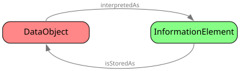
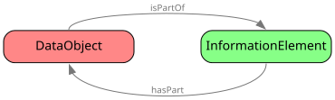
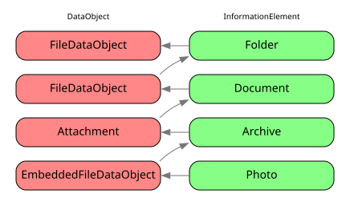

Nepomuk Information Element (NIE)
Top classes in the ontology. Almost everything else is subclass of these.
@prefix nie: <http://tracker.api.gnome.org/ontology/v3/nie#>
The following classes are defined:
DataObject, DataSource, InformationElement
Overview
Introduction
The core of the NEPOMUK Information Element Ontology and the entire Ontology Framework revolves around the concepts of nie:DataObject and nie:InformationElement. They express the representation and content of a piece of data. Their specialized subclasses (defined in the other ontologies) can be used to classify a wide array of desktop resources and express them in RDF.
nie:DataObject class represents a collection of bytes somewhere (local or remote), the physical entity that contain data. The meaning (interpretation) of that entity (e.g. a music file, a picture) is represented on the nie:InformationElement side of the ontology.
All resources on the desktop are basically related to each other with two most fundamental types of relations: interpretation, Expressed through nie:interpretedAs and its reverse nie:isStoredAs.

And containment, expressed through nie:hasPart and its reverse nie:isPartOf.

These properties (or their subproperties with a more specific semantic meaning) provide the scaffolding to give an uniform view of the data with an arbitrary level of detail. For a more thorough example, the figure below represents an image in an archive in the attachment of a PDF document in the filesystem:

The horizontal edges express interpretation, the diagonal edges express containment. This approach gives a uniform overview of data regardless of how it’s represented.
Common properties
Given that the classes defined in this ontology are the superclasses for almost everything in the Nepomuk set of ontologies, the properties defined here will be inherited for a lot of classes. It is worth to comment few of them with special relevance:
- nie:title: Title or name or short text describing the item
- nie:description: More verbose comment about the element
- nie:language: To specify the language of the item.
- nie:plainTextContent: Just the raw content of the file, if it makes sense as text.
- nie:generator: Software/Agent that set/produced the information.
- nie:usageCounter: Count number of accesses to the information. It can be an indicator of relevance for advanced searches
Date and timestamp representations
There are few important dates for the life-cycle of a resource. These dates are properties of the nie:InformationElement class, and inherited for its subclasses:
- nie:informationElementDate: This is an ”abstract” property that act as superproperty of the other dates. Don’t use it directly.
- nie:contentLastModified: Modification time of a resource. Usually the mtime of a local file, or information from the server for online resources.
- nie:contentCreated: Creation time of the content. If the contents is created by an application, the same application should set the value of this property. Note that this property can be undefined for resources in the filesystem because the creation time is not available in the most common filesystem formats.
- nie:contentAccessed: For resources coming from the filesystem, this is the usual access time to the file. For other kind of resources (online or virtual), the application accessing it should update its value.
- nie:lastRefreshed: The time that the content was last refreshed. Usually for remote resources.
URIs and full representation of a file
One of the most common resources in a desktop is a file. Given the split between Data Objects and Information Elements, some times it is not clear how a real file is represented into Nepomuk. Here are some indications:
- Every file (local or remote) should generate one DataObject instance and an InformationElement instance.
- Even when Data Objects and Information Elements are different entities.
- The URI of the DataObject is the real location of the item (e.g. ”file://path/to/file.mp3”)
- The URI of the InformationElement(s) will be generated IDs.
- Every DataObject must have the property nie:url, that points to the location of the resource, and should be used by any program that wants to access it.
- The InformationElement and DataObject are related via the nie:isStoredAs / nie:interpretedAs properties.
Here comes an example, for the image file /home/user/a.jpeg:
# Properties as nmm:Photo
<urn:uuid:10293801928301293> a nmm:Photo ;
nie:isStoredAs <file:///home/user/a.jpeg> ;
nfo:width 49 ;
nfo:height 36 ;
nmm:flash nmm:flash-off;
nmm:whiteBalance nmm:white-balance-automatic ;
nfo:equipment [
a nfo:Equipment ;
nfo:make 'Nokia';
nfo:model 'N900';
nfo:equipmentSoftware 'Tracknon'
] .
# Properties from nfo:FileDataObject
<file:///home/user/a.jpeg> a nfo:FileDataObject ;
nie:interpretedAs <urn:uuid:10293801928301293> ;
nfo:fileSize 12341234 ;
nie:url 'file:///home/user/a.jpeg' .
Classes
DataObject
A unit of data that is created, annotated and processed on the user desktop. It represents a native structure the user works with. The usage of the term ‘native’ is important. It means that a DataObject can be directly mapped to a data structure maintained by a native application. This may be a file, a set of files or a part of a file. The granularity depends on the user. This class is not intended to be instantiated by itself. Use more specific subclasses.
Class hierarchy
RDF Diagram
Properties
| Name | Type | Notes | Description |
|---|---|---|---|
| belongsToContainer | DataContainer | Models the containment relations between Files and Folders (or CompressedFiles). | |
| byteSize | integer | File size in bytes | |
| created | dateTime | Date of creation of the DataObject. Note that this date refers to the creation of the DataObject itself (i.e. the physical representation). Compare with nie:contentCreated | |
| dataSource | DataSource | Marks the provenance of a DataObject, what source does a data object come from | |
| interpretedAs | InformationElement | Links the DataObject with the InformationElement it is interpreted as | |
| isPartOf | InformationElement | Generic property used to express containment relationships between DataObjects. NIE extensions are encouraged to provide more specific subproperties of this one. It is advisable for actual instances of DataObjects to use those specific subproperties. Note to the developers: Please be aware of the distinction between containment relation and provenance. The isPartOf relation models physical containment, a nie:DataObject (e.g. an nfo:Attachment) is a ‘physical’ part of an nie:InformationElement (a nmo:Message). Also, please note the difference between physical containment (isPartOf) and logical containment (isLogicalPartOf) the former has more strict meaning. They may occur independently of each other | |
| lastRefreshed | dateTime | Date when information about this data object was retrieved (for the first time) or last refreshed from the data source. This property is important for metadata extraction applications that don’t receive any notifications of changes in the data source and have to poll it regularly. This may lead to information becoming out of date. In these cases this property may be used to determine the age of data, which is an important element of it’s dependability | |
| url | string | URL pointing at the location of the resource. In cases where creating a simple file:// or http:// URL for a file is difficult (e.g. for files inside compressed archives) the applications are encouraged to use conventions defined by Apache Commons VFS Project at http://jakarta.apache.org/ commons/ vfs/ filesystems.html. |
DataSource
A superclass for all entities from which DataObjects can be extracted. Each entity represents a native application or some other system that manages information that may be of interest to the user of the Semantic Desktop. Subclasses may include FileSystems, Mailboxes, Calendars, websites etc. The exact choice of subclasses and their properties is considered application-specific. Each data extraction application is supposed to provide it’s own DataSource ontology. Such an ontology should contain supported data source types coupled with properties necessary for the application to gain access to the data sources. (paths, urls, passwords etc…)
Class hierarchy
RDF Diagram
Predefined instances
nie:DataSource has the following predefined instances:
- tracker:extractor-data-source
InformationElement
A unit of content the user works with. This is a superclass for all interpretations of a DataObject.
RDF Diagram
Properties
| Name | Type | Notes | Description |
|---|---|---|---|
| contributor | Contact | An entity responsible for making contributions to the content of the InformationElement. | |
| creator | Contact | Creator of a data object, an entity primarily responsible for the creation of the content of the data object. | |
| publisher | Contact | An entity responsible for making the InformationElement available. | |
| isBootable | boolean | True when the file is bootable, for example like an ISO or other disc images | |
| isContentEncrypted | boolean | Might change (IE of DataObject property?) | |
| characterSet | string | Characterset in which the content of the InformationElement was created. Example: ISO-8859-1, UTF-8. One of the registered character sets at http://www.iana.org/assignments/character-sets. This characterSet is used to interpret any textual parts of the content. If more than one characterSet is used within one data object, use more specific properties | |
| comment | string | A user comment about an InformationElement | |
| contentAccessed | dateTime | ||
| contentCreated | dateTime | The date of the content creation. This may not necessarily be equal to the date when the DataObject (i.e. the physical representation) itself was created. Compare with nie:created property | |
| contentLastModified | dateTime | The date of the last modification of the original content (not its corresponding DataObject or local copy). Compare with nie:lastModified | |
| contentSize | integer | The size of the content. This property can be used whenever the size of the content of an InformationElement differs from the size of the DataObject. (e.g. because of compression, encoding, encryption or any other representation issues). The contentSize in expressed in bytes | |
| copyright | string | Content copyright | |
| depends | DataObject | Dependency relation. A piece of content depends on another piece of data in order to be properly understood/used/interpreted | |
| description | string | A textual description of the resource. This property may be used for any metadata fields that provide some meta-information or comment about a resource in the form of a passage of text. This property is not to be confused with nie:plainTextContent. Use more specific subproperties wherever possible | |
| disclaimer | string | A disclaimer | |
| generator | string | Software used to ‘generate’ the contents. E.g. a word processor name | |
| hasLogicalPart | InformationElement | Generic property used to express ‘logical’ containment relationships between InformationElements. NIE extensions are encouraged to provide more specific subproperties of this one. It is advisable for actual instances of InformationElement to use those specific subproperties. Note the difference between ‘physical’ containment (hasPart) and logical containment (hasLogicalPart) | |
| hasPart | DataObject | Generic property used to express ‘physical’ containment relationships between DataObjects. NIE extensions are encouraged to provide more specific subproperties of this one. It is advisable for actual instances of DataObjects to use those specific subproperties. Note to the developers: Please be aware of the distinction between containment relation and provenance. The hasPart relation models physical containment, an InformationElement (a nmo:Message) can have a ‘physical’ part (an nfo:Attachment). Also, please note the difference between physical containment (hasPart) and logical containment (hasLogicalPart) the former has more strict meaning. They may occur independently of each other | |
| identifier | string | An unambiguous reference to the InformationElement within a given context. Recommended best practice is to identify the resource by means of a string conforming to a formal identification system | |
| informationElementDate | dateTime | A point or period of time associated with an event in the lifecycle of an Information Element. A common superproperty for all date-related properties of InformationElements in the NIE Framework | |
| isLogicalPartOf | InformationElement | Generic property used to express ‘logical’ containment relationships between DataObjects. NIE extensions are encouraged to provide more specific subproperties of this one. It is advisable for actual instances of InformationElement to use those specific subproperties. Note the difference between ‘physical’ containment (isPartOf) and logical containment (isLogicalPartOf) | |
| isStoredAs | DataObject | Links the information element with the DataObject it is stored in | |
| keyword | string | Adapted DublinCore: The topic of the content of the resource, as keyword. No sentences here. Recommended best practice is to select a value from a controlled vocabulary or formal classification scheme | |
| language | string | Language the InformationElement is expressed in. Users are encouraged to use the two-letter code specified in the RFC 3066 | |
| legal | string | A common superproperty for all properties that point at legal information about an Information Element | |
| license | string | Terms and intellectual property rights licensing conditions. | |
| licenseType | string | The type of the license. Possible values for this field may include ‘GPL’, ‘BSD’, ‘Creative Commons’ etc. | |
| links | DataObject | A linking relation. A piece of content links/mentions a piece of data | |
| mimeType | string | File Mime Type | |
| plainTextContent | string | Plain-text representation of the content of a InformationElement with all markup removed. The main purpose of this property is full-text indexing and search. Its exact content is considered application-specific. The user can make no assumptions about what is and what is not contained within. Applications should use more specific properties wherever possible. | |
| relatedTo | DataObject | A common superproperty for all relations between a piece of content and other pieces of data (which may be interpreted as other pieces of content). | |
| rootElementOf | DataSource | DataObjects extracted from a single data source are organized into a containment tree. This property links the root of that tree with the datasource it has been extracted from | |
| subject | string | The subject or topic of the document | |
| title | string | The title of the document | |
| usageCounter | integer | ||
| version | string | The current version of the given data object. Exact semantics is unspecified at this level. Use more specific subproperties if needed | |
| id | string | ||
| mediaId | string | ||
| location | GeoLocation | This can be subclassed to add semantics | |
| hasExternalReference | ExternalReference | Links the information element with the external reference |
Credits and Copyright
Authors:
- Antoni Mylka, DFKI, <antoni.mylka@dfki.de>
- Leo Sauermann, DFKI, <leo.sauermann@dfki.de>
- Ludger van Elst, DFKI, <elst@dfki.uni-kl.de>
- Michael Sintek, DFKI, <michael.sintek@dfki.de>
Editors:
- Antoni Mylka, DFKI, <antoni.mylka@dfki.de>
Contributors:
- Christiaan Fluit, Aduna, <christiaan.fluit@aduna-software.com>
- Evgeny ‘phreedom’ Egorochkin, KDE Strigi Developer, <stexx@mail.ru>
Upstream: Upstream version
ChangeLog: Tracker changes
Copyright:
© 2007